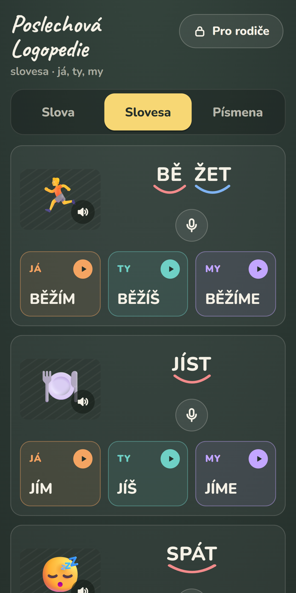
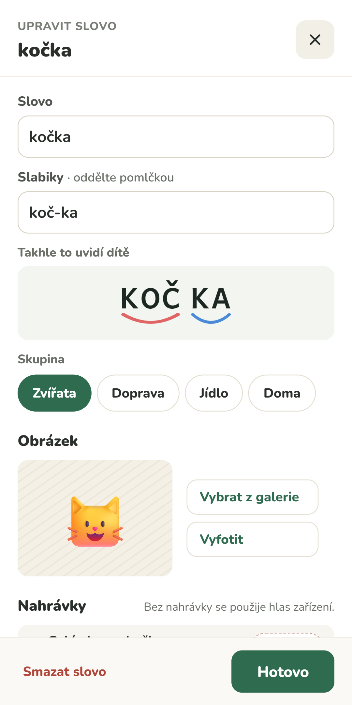

Pro koho je
Pro děti se sluchovými obtížemi – nedoslýchavé děti, děti se sluchadly nebo kochleárním implantátem a děti s potížemi se sluchovým rozlišováním – a pro jejich rodiče a logopedy. Aplikace slouží k domácímu procvičování mezi návštěvami logopeda.
Co umí
Hlasy, které dítě zná
Ke každému slovu nahrajete vlastní hlas – celé slovo i každou slabiku zvlášť. Maminka, tatínek, sourozenec nebo logoped.
Fotky z domova
Vyfoťte skutečný hrnek, vlastní kočku nebo auto. Dítě poslouchá slova u věcí, které opravdu zná.
Poslech po slabikách
Slova jsou rozdělená na slabiky s barevnými oblouky. Klepnutím na slabiku zazní jen ona, klepnutím na obrázek celé slovo.
Dítě se nahraje a porovná
Mikrofon na každé kartě: dítě si nahraje svůj pokus a poslechne si „já“ i „vzor“.
Hry a samolepky
Pexeso, poslechové bingo, zapamatuj si pořadí nebo balení na výlet. Za správné odpovědi občas přibude samolepka do vlastního alba.
Slovesa a hlásky · plná verze
Slovesa s tvary já / ty / my a celá česká abeceda – ke každé hlásce vlastní nahrávka.
Klidné prostředí
Velké dotykové plochy, bez reklam, odměn a časovačů. Tři vzhledy a klidné jednobarevné oblouky.
Jak to vypadá


Cena
Zdarma
10 připravených slov v každé kategorii a 5 vlastních slov s vašimi nahrávkami a fotkami. Ostatní obsah uvidíte zašedlý.
Plná verze · 119,90 Kč
Jednorázová platba v aplikaci, bez předplatného. Všechna připravená slova, slovesa já / ty / my, hlásky a písmena a neomezený počet vlastních slov.
Soukromí
Bez reklam, bez sledování, bez účtů. Fotky i nahrávky zůstávají jen ve vašem zařízení a aplikace nic neodesílá na internet. Podrobnosti v zásadách ochrany soukromí.
Aplikace je pomůckou k procvičování a nenahrazuje odbornou logopedickou péči. Postup procvičování konzultujte se svým logopedem.